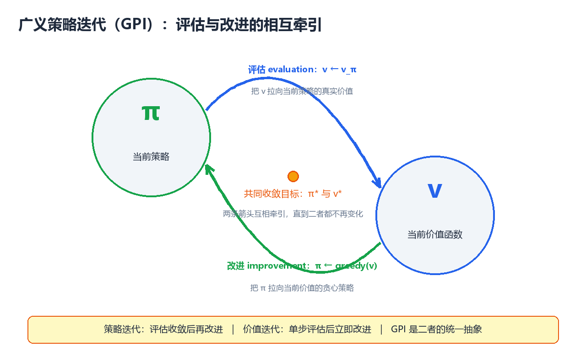
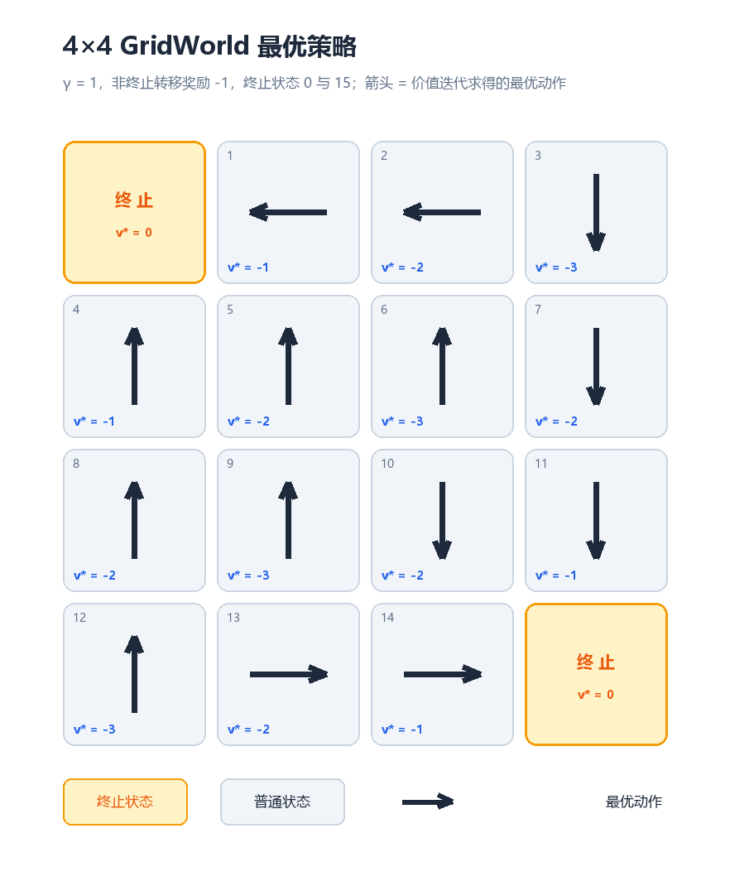

动态规划（Dynamic Programming）
动态规划（Dynamic Programming, DP）是求解马尔可夫决策过程（MDP）的 第一族完整算法，也是整个强化学习理论的数学基石。本章从"已知模型 + 完美马尔可夫"两个前提出发，系统讲解策略评估（Policy Evaluation）、 策略改进（Policy Improvement）、策略迭代（Policy Iteration）与 价值迭代（Value Iteration） 四大核心算法，并以广义策略迭代 （Generalized Policy Iteration, GPI） 的统一视角收束全章。全文假设读者 已掌握第 1 章的 MDP 五要素与贝尔曼方程；所有代码均为可运行的 Python 3 实现，实验环境为经典 4×4 GridWorld（Sutton & Barto 例 4.1 风格）。
一、动态规划在强化学习中的定位
1.1 "动态规划"这个名字从何而来
"动态规划"一词由 Richard Bellman 于 1950 年代提出。Bellman 选用 "dynamic"一词，一方面因为"动态"准确描述了问题随时间分阶段决策的结构， 另一方面是为了让这个数学方法听起来"足够有吸引力"。
在强化学习语境下，动态规划指利用贝尔曼方程递归结构求解最优策略的 一族算法：
动态规划 = 把"大问题"（整个 MDP 的最优策略）分解为
"小问题"（每个状态的价值），
再用小问题的解递归地组装出大问题的解
核心思想：价值函数满足贝尔曼方程，即"当前状态的价值 = 即时奖励 + 折扣后的未来状态价值"。这个自指（self-referential）结构天然适合 递归求解——只要把每个状态的价值算出来，最优策略就随之确定。DP 就是 围绕这个递归结构建立起来的完整算法族。
1.2 DP 的两个前提条件
DP 不是万能的，它成立需要两个硬性前提：
| 前提 | 含义 | 如果违反 |
|---|---|---|
| 已知环境模型 | 转移概率 \(P(s', r \mid s, a)\) 与奖励函数 \(R(s, a)\) 完全已知 | 无法直接计算期望，必须与真实环境交互采样（→ 第 3、4 章免模型方法） |
| 完美马尔可夫 | 状态完全可观测，转移满足马尔可夫性质 | 贝尔曼方程失效，需要 POMDP 框架 |
这两个前提决定了 DP 的本质：DP 是"规划"（planning），不是"学习" （learning）。
| 维度 | 规划（Planning） | 学习（Learning） |
|---|---|---|
| 数据来源 | 已知模型，直接查 \(P\) 与 \(R\) | 与环境交互产生的经验轨迹 |
| 是否需要环境 | 不需要，纯计算 | 必须与环境交互 |
| 典型算法 | 策略迭代、价值迭代、MCTS | MC、TD、Q-Learning、PPO |
| 误差来源 | 数值近似、截断误差 | 采样噪声、函数逼近误差 |
1.3 DP 与 MC / TD 的定位对比
在第 3、4 章展开蒙特卡洛（Monte Carlo, MC）与时序差分（Temporal Difference, TD）之前，先给出三者的宏观定位——这是理解后续章节的"地图"：
| 维度 | 动态规划 DP | 蒙特卡洛 MC | 时序差分 TD |
|---|---|---|---|
| 是否需要环境模型 | 需要（已知 \(P, R\)） | 不需要 | 不需要 |
| 是否需要交互采样 | 不需要（纯计算） | 需要（完整回合） | 需要（单步即可） |
| 更新方式 | 全状态同步扫描（sweep） | 回合结束用整回合回报更新 | 每步"奖励 + 下一步估计"更新 |
| 自举（Bootstrapping） | 是（用 \(v_k(s')\) 更新 \(v_{k+1}(s)\)） | 否（用真实回报 \(G_t\)） | 是（用当前估计 \(V(s')\)） |
| 偏差 / 方差 | 无采样偏差（但需模型） | 无偏、高方差 | 有偏、低方差 |
| 代表算法 | 策略迭代、价值迭代 | 首次访问 / 每次访问 MC | SARSA、Q-Learning |
核心思想：三者都在解同一个贝尔曼方程，区别只在"期望怎么算"—— DP 用已知模型算精确期望，MC 用整回合采样近似期望，TD 用单步采样 + 自举折中。DP 是理论基线，MC 与 TD 是它在模型未知时的"替身"。
1.4 经典适用场景
DP 的经典适用场景，共同特征是模型已知、状态空间有限（或可离散化）：
| 场景 | 为什么适合 DP |
|---|---|
| 棋盘游戏求解（国际象棋残局、黑白棋、双陆棋、井字棋） | 规则即模型，转移完全已知，状态可枚举 |
| 最短路径 / 图搜索（Dijkstra、Floyd-Warshall 的思想源头） | 就是确定性的 MDP 求解 |
| 线性二次调节器（LQR） 等最优控制问题 | 系统动力学已知，连续状态可用解析式 |
| 动态资产配置 / 背包问题 / 编辑距离 等运筹问题 | 阶段决策结构天然是 MDP |
| 现代算法的内部规划器（AlphaZero 的 MCTS 价值备份） | 在已知规则环境中"想几步" |
注意：在绝大多数现代深度强化学习任务（像素输入、连续控制）中， 模型未知或状态空间巨大，DP 无法直接使用。但理解 DP 是理解一切后续 算法的前提——MC、TD、DQN 全部可以看作"用采样代替期望的 DP"。
1.5 贝尔曼方程的递归结构：DP 的引擎
第 1 章给出的两个核心方程，是本章所有算法的出发点：
贝尔曼期望方程（Bellman Expectation Equation）——描述"给定策略 \(\pi\) 的价值"：
贝尔曼最优性方程（Bellman Optimality Equation）——描述"最优价值"：
两者的共同结构是：\(v(s)\) 出现在等号两边，这正是"递归"所在：
v(s) = r(s, a) + γ · v(s') ← 等号右边还有 v
↑ 即时 ↑ 未来的价值（下一个状态的价值）
要解开这个自指方程，有三大类思路：
| 思路 | 方法 | 特点 |
|---|---|---|
| 直接求解 | 解线性方程组 \(v = (I - \gamma P_\pi)^{-1} r_\pi\) | 精确但 \(O(\lvert S \rvert^3)\)，只适用于极小状态空间 |
| 迭代求解（DP 的做法） | 从初始估计出发反复套用贝尔曼方程直到收敛 | 每次更新 \(O(\lvert S \rvert^2 \lvert A \rvert)\)，本章全部内容 |
| 采样求解（MC/TD 的做法） | 用经验回报代替期望 | 模型未知时的替代方案（第 3、4 章） |
核心思想：DP 选择"迭代求解"——不追求一步到位，而是让价值估计 一轮一轮地逼近真实值。每一轮更新（backup）都在"消费"一次贝尔曼 方程，这正是"动态"二字的数学含义。
1.6 符号约定与本章路线图
本章沿用第 1 章符号，为方便查阅集中列出：
| 符号 | 含义 |
|---|---|
| \(S, A, P, R, \gamma\) | MDP 五要素：状态集、动作集、转移概率、奖励、折扣因子 |
| \(\pi(a \mid s)\) | 策略：状态到动作的（随机）映射 |
| \(v_\pi(s), q_\pi(s, a)\) | 策略 \(\pi\) 下的状态 / 动作价值函数 |
| \(v_*(s), q_*(s, a), \pi_*\) | 最优价值函数与最优策略 |
| \(v_k\) | 第 \(k\) 轮迭代后的价值估计 |
| sweep（扫描） | 对全部状态完成一轮更新，是 DP 的基本计量单位 |
本章的算法路线：
┌─────────────────────────────────────┐
│ 已知模型 P, R │
└──────────────────┬──────────────────┘
▼
┌──────────────────────────────────────────┐
│ 策略评估（第 2 节） │
│ 任意 π ──► v_π（迭代贝尔曼期望方程） │
└──────────────────┬───────────────────────┘
▼
┌──────────────────────────────────────────┐
│ 策略改进（第 3 节） │
│ v_π ──► 贪心策略 π'（策略改进定理保证不差） │
└──────────────────┬───────────────────────┘
▼
┌──────────────────────────────────────────┐
│ 策略迭代（第 4 节）：评估 ⟷ 改进，循环至收敛 │
│ 价值迭代（第 5 节）：评估与改进合并为 max 备份│
└──────────────────────────────────────────┘
▼
┌──────────────────────────────────────────┐
│ 广义策略迭代 GPI（第 6 节）：统一视角 │
│ 扩展与局限（第 7 节）→ 完整实验（第 8 节） │
└──────────────────────────────────────────┘
二、策略评估（Policy Evaluation）
2.1 问题定义
策略评估（又称预测问题，prediction problem）：给定策略 \(\pi\)， 计算它的状态价值函数 \(v_\pi\)：
这是"评估"而非"求解最优"——我们不问"最好的策略是什么"，只问 "这个策略到底有多好"。
为什么先学评估？ 因为"改进"依赖"评估"：要判断一个策略好不好、 往哪个方向改进，必须先能量化它的价值。策略评估是所有后续算法 （策略迭代、价值迭代、乃至 MC/TD 预测）的公共组件。
2.2 迭代策略评估：公式与推导
直接解 \(v_\pi\) 需要解 \(|S|\) 元线性方程组，代价 \(O(|S|^3)\)。DP 的替代 方案是迭代策略评估（Iterative Policy Evaluation）：从初始估计 \(v_0\) 出发，反复应用贝尔曼期望方程：
推导：贝尔曼期望方程 \(v_\pi = \mathcal{T}^\pi v_\pi\) 定义了算子 \(\mathcal{T}^\pi\)（贝尔曼期望算子）。迭代策略评估就是不动点迭代 \(v_{k+1} = \mathcal{T}^\pi v_k\)，而 \(\mathcal{T}^\pi\) 是压缩映射 （contraction mapping）：对任意 \(u, v\) 有
核心思想：贝尔曼期望算子每作用一次，价值估计与真实 \(v_\pi\) 的 距离至少缩小 \(\gamma\) 倍。因此无论 \(v_0\) 取什么初值，迭代都线性收敛 到唯一不动点 \(v_\pi\)。当 \(\gamma = 1\) 时，只要策略保证最终到达吸收终止 状态（如本章 GridWorld），同样收敛。
算法伪代码（Sutton & Barto 算法 4.1 风格）：
输入：策略 π，阈值 θ > 0
初始化：V(s) = 0（非终止状态），V(终止) = 0
重复：
Δ ← 0
对每个状态 s ∈ S：
v ← V(s)
V(s) ← Σ_a π(a|s) Σ_{s',r} P(s',r|s,a) [r + γV(s')]
Δ ← max(Δ, |v − V(s)|)
直到 Δ < θ
输出：V ≈ v_π
一次更新（backup）的图示——价值从"后继状态"流向"当前状态"：
动作 a₁ ──► s'₁ ── r₁
╱
s ──●─── 动作 a₂ ──► s'₂ ── r₂ ← 叶子 v_k(s') 汇聚到根 v_{k+1}(s)
╲
动作 a₃ ──► s'₃ ── r₃
2.3 收敛性：不动点视角
为什么"反复套公式"就能收敛？把真实值 \(v_\pi\) 想成一根弹簧的固定端， 当前估计 \(v_k\) 是自由端——每次更新都把估计往真实值方向拉一把， 拉力恰好是 \(\gamma\) 倍的距离：
| 迭代轮数 | 误差上界（相对初值误差） |
|---|---|
| \(k\) | \(\gamma^k \cdot \lVert v_0 - v_\pi \rVert_\infty\) |
| \(\gamma = 0.9\)，\(k = 10\) | \(0.9^{10} \approx 0.35\)（误差降到 1/3） |
| \(\gamma = 0.9\)，\(k = 50\) | \(0.9^{50} \approx 0.005\)（误差降到 0.5%） |
| \(\gamma = 0.5\)，\(k = 10\) | \(0.5^{10} \approx 0.001\)（几乎收敛） |
核心思想：\(\gamma\) 越小收敛越快（但"看得越近"）；\(\gamma\) 越大收敛 越慢（但价值越"有远见"）。收敛速度与折扣因子直接挂钩，这是 DP 所有 迭代算法的共同规律。
2.4 一个小例子：三状态链的逐轮迭代
用一个最小的三状态 MDP 观察迭代过程。状态 \(A, B, C\) 构成循环，策略固定 为"总是走向下一个状态"，每步奖励 \(+1\)，\(\gamma = 0.9\)：
A ──► B ──► C ──► A ──► ... （循环，无终止状态）
π：A→B，B→C，C→A；奖励恒为 +1
由对称性 \(v(A) = v(B) = v(C) = v\)，贝尔曼方程给出 \(v = 1 + 0.9v\)， 解析解 \(v = 10\)。从 \(v_0 = 0\) 出发迭代（真实运行结果）：
| 轮数 \(k\) | \(v_k(A) = v_k(B) = v_k(C)\) | 与极限 10 的误差 |
|---|---|---|
| 0 | 0.0000 | 10.0000 |
| 1 | 1.0000 | 9.0000 |
| 2 | 1.9000 | 8.1000 |
| 3 | 2.7100 | 7.2900 |
| 4 | 3.4390 | 6.5610 |
| 5 | 4.0951 | 5.9049 |
| 6 | 4.6856 | 5.3144 |
| 7 | 5.2170 | 4.7830 |
| 8 | 5.6953 | 4.3047 |
| 9 | 6.1258 | 3.8742 |
| 10 | 6.5132 | 3.4868 |
| \(\infty\) | 10.0000 | 0.0000 |
观察：每轮误差恰好乘以 \(\gamma = 0.9\)（\(9.0 \to 8.1 \to 7.29 \to \dots\)）， 这正是压缩映射理论的数值验证——误差呈几何级数衰减，衰减率就是 \(\gamma\)。
对应代码：
import numpy as np
# 三状态链：A=0, B=1, C=2；策略固定为"走向下一个状态"；奖励恒为 +1
gamma = 0.9
V = np.zeros(3)
for k in range(1, 11):
V_new = np.zeros(3)
for s in range(3):
ns = (s + 1) % 3 # 策略：A→B, B→C, C→A
V_new[s] = 1.0 + gamma * V[ns]
V = V_new
print(f"k={k:2d}: V(A)={V[0]:8.4f} V(B)={V[1]:8.4f} V(C)={V[2]:8.4f}")
# 预期输出:
# k= 1: V(A)= 1.0000 V(B)= 1.0000 V(C)= 1.0000
# k= 2: V(A)= 1.9000 V(B)= 1.9000 V(C)= 1.9000
# k= 3: V(A)= 2.7100 V(B)= 2.7100 V(C)= 2.7100
# k= 4: V(A)= 3.4390 V(B)= 3.4390 V(C)= 3.4390
# k= 5: V(A)= 4.0951 V(B)= 4.0951 V(C)= 4.0951
# k= 6: V(A)= 4.6856 V(B)= 4.6856 V(C)= 4.6856
# k= 7: V(A)= 5.2170 V(B)= 5.2170 V(C)= 5.2170
# k= 8: V(A)= 5.6953 V(B)= 5.6953 V(C)= 5.6953
# k= 9: V(A)= 6.1258 V(B)= 6.1258 V(C)= 6.1258
# k=10: V(A)= 6.5132 V(B)= 6.5132 V(C)= 6.5132
# （极限值 = 1 / (1 - 0.9) = 10.0）
2.5 实验环境：4×4 GridWorld
本章正式实验环境沿用 Sutton & Barto 例 4.1 的 GridWorld：
| 规则项 | 定义 |
|---|---|
| 状态空间 | \(4 \times 4\) 网格，编号 0–15 |
| 终止状态 | 左上角 0 与右下角 15（奖励 0，永久停留） |
| 动作空间 | 上、下、左、右（确定性转移） |
| 奖励 | 每次非终止转移奖励 \(-1\)；撞墙（越界）原地不动，仍奖励 \(-1\) |
| 折扣因子 | \(\gamma = 1\)（任务必然终止，无需折扣） |
| 目标 | 从任意格子出发，以最少步数到达任一终止状态 |
网格布局（T 为终止状态）：
列 0 列 1 列 2 列 3
行 0 ┌─────┬─────┬─────┬─────┐
│ 0 │ 1 │ 2 │ 3 │
│ T │ │ │ │
行 1 ├─────┼─────┼─────┼─────┤
│ 4 │ 5 │ 6 │ 7 │
行 2 ├─────┼─────┼─────┼─────┤
│ 8 │ 9 │ 10 │ 11 │
行 3 ├─────┼─────┼─────┼─────┤
│ 12 │ 13 │ 14 │ 15 │
│ │ │ │ T │
└─────┴─────┴─────┴─────┘
环境代码（后续所有实验共用）：
import numpy as np
SIZE = 4
N = SIZE * SIZE # 16 个状态
TERMINAL = {0, 15} # 终止状态集合
ORDER = ['↑', '↓', '←', '→'] # 动作遍历顺序（决定平局时的取舍）
ACT_DELTA = {'↑': -SIZE, '↓': +SIZE, '←': -1, '→': +1}
def step(s, a):
"""执行动作 a，返回 (s', r)。
越界（撞墙）则原地停留；非终止转移奖励 -1；终止状态奖励 0 并停留。"""
if s in TERMINAL:
return s, 0.0
ns = s + ACT_DELTA[a]
# 撞墙检测：上下越界 / 左右越界
if ns < 0 or ns >= N:
ns = s
if (s % SIZE == 0 and a == '←') or (s % SIZE == SIZE - 1 and a == '→'):
ns = s
return ns, -1.0
def show(V, dec=2):
"""把价值向量打印为 4x4 表格"""
print(np.array2string(V.reshape(SIZE, SIZE), precision=dec,
suppress_small=True, floatmode='fixed'))
def show_policy(policy):
"""把策略打印为箭头网格（T 表示终止状态）"""
for r in range(SIZE):
print(' '.join('T' if (r * SIZE + c) in TERMINAL
else policy[r * SIZE + c] for c in range(SIZE)))
2.6 Python 实现：随机策略的迭代评估
对 GridWorld 应用均匀随机策略（四动作各 \(0.25\) 概率），用迭代策略 评估计算 \(v_\pi\)：
# 均匀随机策略的迭代策略评估
gamma = 1.0
V = np.zeros(N)
for k in range(1, 5):
V_new = np.zeros(N)
for s in range(N):
if s in TERMINAL:
continue # 终止状态价值恒为 0
total = 0.0
for a in ORDER: # 4 个动作，各 0.25 概率
ns, r = step(s, a)
total += 0.25 * (r + gamma * V[ns])
V_new[s] = total
V = V_new
print(f"--- k={k} ---")
show(V)
# 预期输出:
# --- k=1 ---
# [[ 0.00 -1.00 -1.00 -1.00]
# [-1.00 -1.00 -1.00 -1.00]
# [-1.00 -1.00 -1.00 -1.00]
# [-1.00 -1.00 -1.00 0.00]]
# --- k=2 ---
# [[ 0.00 -1.75 -2.00 -2.00]
# [-1.75 -2.00 -2.00 -2.00]
# [-2.00 -2.00 -2.00 -1.75]
# [-2.00 -2.00 -1.75 0.00]]
# --- k=3 ---
# [[ 0.00 -2.44 -2.94 -3.00]
# [-2.44 -2.88 -3.00 -2.94]
# [-2.94 -3.00 -2.88 -2.44]
# [-3.00 -2.94 -2.44 0.00]]
# --- k=4 ---
# [[ 0.00 -3.06 -3.84 -3.97]
# [-3.06 -3.72 -3.91 -3.84]
# [-3.84 -3.91 -3.72 -3.06]
# [-3.97 -3.84 -3.06 0.00]]
继续迭代直到收敛（\(\Delta < 10^{-4}\)），需要 173 次扫描，得到 \(v_\pi\) （与 Sutton 教材图 4.1 完全一致）：
# 收敛版本：加收敛判据，打印最终结果
theta = 1e-4
V = np.zeros(N)
for it in range(1, 10000):
V_new = np.zeros(N)
for s in range(N):
if s in TERMINAL:
continue
total = 0.0
for a in ORDER:
ns, r = step(s, a)
total += 0.25 * (r + gamma * V[ns])
V_new[s] = total
delta = np.max(np.abs(V_new - V))
V = V_new
if delta < theta:
break
print(f"随机策略评估收敛于第 {it} 轮（delta={delta:.2e}）")
show(V)
# 预期输出:
# 随机策略评估收敛于第 173 轮（delta=9.89e-05）
# [[ 0.00 -14.00 -20.00 -22.00]
# [-14.00 -18.00 -20.00 -20.00]
# [-20.00 -20.00 -18.00 -14.00]
# [-22.00 -20.00 -14.00 0.00]]
2.7 输出解读
| 现象 | 解释 |
|---|---|
| 所有值都为负 | 随机策略每步期望收益为负，到达终止前的步数越多越负 |
| 角落附近（状态 1、4）值最大（\(-14\)） | 靠近终止状态，随机游走很快能撞进去 |
| 中心区域（状态 2、3、7）值最负（\(-20 \sim -22\)） | 离两个终止状态都远，随机游走耗时最长 |
| 完全对称 | 网格关于对角线（0–15 连线）对称，价值也对称 |
核心思想：价值函数把"策略的远期后果"压缩成一个数——它反映的是 在策略 \(\pi\) 下，从这个状态出发平均还要吃多少苦（负奖励）。有了 这个数，就能判断"往哪个方向走更好"——这正是下一节策略改进的输入。
2.8 工程细节：收敛判据与实现选择
| 实现问题 | 标准做法 | 说明 |
|---|---|---|
| 何时停止 | \(\max_s \lvert V_{new}(s) - V(s) \rvert < \theta\)（如 \(10^{-4}\)） | 相邻两轮最大变化量（delta）作收敛度量 |
| 终止状态 | 价值恒为 0，不参与更新 | 由环境定义保证，是边界条件 |
| 双数组 vs 就地 | 双数组与理论公式一一对应；就地更新收敛更快 | 就地更新见 7.1 节 |
| \(\gamma = 1\) 是否安全 | 策略保证最终到达终止状态即安全 | 否则价值发散（负奖励无限累积） |
| 复杂度 | 每轮 \(O(\lvert S \rvert^2 \lvert A \rvert)\) | 每个状态要遍历所有后继求期望 |
三、策略改进（Policy Improvement）
3.1 从评估到改进：贪心的一步
有了 \(v_\pi\)，如何得到更好的策略？最自然的想法是贪心（greedy）： 在每个状态，选择使"即时奖励 + 后续价值"最大的动作：
核心思想：策略改进就是"站在当前价值函数上做一步贪心"。它不改 变价值函数，只根据 \(v_\pi\) 重新选择动作——把策略从"按 \(\pi\) 行动"改成 "每步都选当前看起来最好的动作"。
3.2 策略改进定理（Policy Improvement Theorem）
贪心改进真的能让策略变得不差吗？这是本节的核心定理：
策略改进定理：设 \(\pi\) 与 \(\pi'\) 是任意两个确定性策略，若对任意 状态 \(s\) 有
\[q_{\pi}\big(s, \pi'(s)\big) \ge v_{\pi}(s)\]则 \(\pi'\) 至少与 \(\pi\) 一样好：
\[v_{\pi'}(s) \ge v_{\pi}(s), \qquad \forall s \in S\]
直觉论证：条件说的是"在状态 \(s\) 用 \(\pi'\) 的动作、其余状态仍用 \(\pi\)，不比全程用 \(\pi\) 差"。把 \(\pi'\) 的"背叛"逐步扩散到所有状态：
第 1 步：只在 s 用 π' 的动作 → 不差于全程 π （由条件）
第 2 步：在 s 与 s' 用 π' 的动作 → 不差于第 1 步 （对 s' 再套条件）
第 3 步：在 s、s'、s'' 用 π' → 不差于第 2 步 （依此类推）
⋮
全程用 π' → 不差于全程用 π （有限状态，有限步扩散完）
形式化证明（telescoping）：设 \(\pi'\) 满足条件，反复展开：
每一步都在"把下一个状态也换成按 \(\pi'\) 行动"，反复套用条件后得到 \(v_\pi(s) \le v_{\pi'}(s)\)。\(\blacksquare\)
注意：贪心改进 \(\pi'(s) = \arg\max_a q_\pi(s, a)\) 显然满足定理条件 （取最大值当然不小于 \(v_\pi(s)\)），所以贪心改进后的策略一定不差于原 策略。这就是策略迭代能"越改越好"的理论基石。
3.3 为什么"贪心"不会变差：一个直观类比
把价值函数想成一张"地形图"，\(v_\pi(s)\) 是每个位置的海拔（越高越好）。 贪心改进相当于：在每个位置，朝海拔上升最快的方向迈一步。因为海拔 （价值）已经编码了"未来的所有后果"，所以朝最陡方向走，即使暂时绕路， 长期也不会吃亏。
地形图视角：
v 值等高线（越高越好）
▲
│ ← 贪心：总是选择"r + γ·v(s')"最大的方向
│ 相当于沿最陡上升方向走
▼
只要 v 是"诚实的"（= v_π），贪心就不会走到更差的地方
3.4 等号情形：最优策略的判定条件
如果改进之后每个状态都选不出更好的动作——即 \(\pi'\) 与 \(\pi\) 完全 相同——说明什么？对每个状态 \(s\)：
这正是贝尔曼最优性方程！因此：
核心思想：\(\pi' = \pi\)（改进不动）当且仅当 \(v_\pi = v_*\)，此时 \(\pi\) 就是最优策略 \(\pi_*\)。"改进不动"就是最优的判据——策略迭代正是利用 这个判据停机的。
3.5 示例：对随机策略价值做一次贪心改进
用 2.6 节收敛的 \(v_\pi\)（随机策略）做一次贪心改进。对每个状态计算 \(\pi'(s) = \arg\max_a \left[ -1 + v_\pi(s') \right]\)。以状态 1 为例：
| 动作 | 下一状态 \(s'\) | \(q(s, a) = -1 + v_\pi(s')\) |
|---|---|---|
| ↑（撞墙） | 1 | \(-1 + (-14) = -15\) |
| ↓ | 5 | \(-1 + (-18) = -19\) |
| ← | 0（终止） | \(-1 + 0 = -1\) |
| → | 2 | \(-1 + (-20) = -21\) |
显然 \(\pi'(1) = \leftarrow\)——直接走向终止状态。对全部 16 个状态做同样 计算，得到改进后的策略：
T ← ← ↓
↑ ↑ ← ↓
↑ ↑ ↓ ↓
↑ ↓ → T
重要观察：这个策略还不是最优的（状态 13 选 ↓ 会撞墙原地打转， 正确动作是 →）。原因：\(v_\pi\) 是随机策略的价值，用它做贪心，在价值相等 处（状态 13 的 ↓ 与 → 都给出 \(-15\)）可能选错。一次改进往往不够—— 这正是下一节"评估 → 改进 → 再评估 → 再改进"循环的动机。
四、策略迭代（Policy Iteration）
4.1 完整流程
策略迭代（Policy Iteration, PI） 把前两节的组件串成循环：评估当前 策略 → 贪心改进 → 再评估 → 再改进……直到策略不再变化。
┌──────────────────────────────────────────┐
│ │
▼ │
┌─────────────────────┐ │
│ ① 策略评估 │ │
│ 用迭代策略评估 │ │
│ 求 v_π（直到收敛） │ │
└──────────┬──────────┘ │
│ v_π │
▼ │
┌─────────────────────┐ │
│ ② 策略改进 │ │
│ π' = greedy(v_π) │ │
└──────────┬──────────┘ │
│ │
├── π' = π ？──── 是 ────► 输出 π* = π, v* = v_π
│
└── 否：π ← π'，回到 ①（循环）
伪代码（Sutton & Barto 算法 4.3 风格）：
1. 初始化：任选策略 π（如随机策略）
2. 策略评估：迭代计算 v_π（见第 2 节），直到收敛
3. 策略改进：π'(s) = argmax_a Σ P(s',r|s,a)[r + γv_π(s')]
4. 若 π' ≠ π：π ← π'，回到 2；否则输出 π* = π' 与 v* = v_π
4.2 收敛性与复杂度
| 性质 | 结论 | 理由 |
|---|---|---|
| 单调性 | 每轮改进后策略不差于上一轮 | 策略改进定理（3.2 节） |
| 有限终止 | 有限 MDP 中在有限步内收敛到 \(\pi_*\) | 确定性策略总数有限（\(\lvert A \rvert^{\lvert S \rvert}\)），序列严格单调 |
| 改进轮数 | 实践中通常很少（往往 3–10 轮） | 每轮是全局贪心，一步能修正大量状态 |
| 单轮代价 | 评估 \(O(k \lvert S \rvert^2 \lvert A \rvert)\)，改进 \(O(\lvert S \rvert \lvert A \rvert)\) | \(k\) 为评估扫描次数 |
核心思想：策略迭代每一步都让策略严格变好（除非已最优），而策略 空间有限，所以必然在有限步内停在最优策略上。这与价值迭代"价值单调逼近、 策略可能来回跳"形成鲜明对比。
4.3 Python 实现：GridWorld 策略迭代
初始策略 \(\pi_0\) 取"每个状态优先向右，最右一列向下"（合法但明显 低效，方便观察改进过程）：
# ---------- 策略迭代：完整实现 ----------
gamma = 1.0
theta = 1e-4
def evaluate(policy, gamma=gamma, theta=theta, max_sweeps=10000):
"""确定性策略评估：反复扫描直至收敛，返回 (V, 扫描次数)"""
V = np.zeros(N)
for sweep in range(1, max_sweeps + 1):
V_new = V.copy()
delta = 0.0
for s in range(N):
if s in TERMINAL:
continue
ns, r = step(s, policy[s])
V_new[s] = r + gamma * V[ns]
delta = max(delta, abs(V_new[s] - V[s]))
V = V_new
if delta < theta:
return V, sweep
return V, max_sweeps
def improve(policy, V, gamma=gamma):
"""贪心改进：返回 (新策略, 是否稳定)。平局取动作序中第一个。"""
stable = True
new_policy = policy.copy()
for s in range(N):
if s in TERMINAL:
continue
best_a, best_q = None, -np.inf
for a in ORDER: # 严格大于：平局取第一个
ns, r = step(s, a)
q = r + gamma * V[ns]
if q > best_q:
best_q, best_a = q, a
new_policy[s] = best_a
if best_a != policy[s]:
stable = False
return new_policy, stable
# 初始策略：向右走，最右一列向下
policy = ['→'] * N
for r in range(SIZE):
policy[r * SIZE + 3] = '↓'
V = np.zeros(N)
total_sweeps = 0
for pi_round in range(1, 10):
V, sweeps = evaluate(policy) # ① 策略评估
total_sweeps += sweeps
new_policy, stable = improve(policy, V) # ② 策略改进
print(f"第 {pi_round} 轮：评估 {sweeps} 次扫描；策略{'已稳定' if stable else '已更新'}")
print("V 表:"); show(V)
print("策略:"); show_policy(new_policy)
policy = new_policy
if stable:
break
print(f"评估阶段总扫描次数: {total_sweeps}")
# 预期输出:
# 第 1 轮：评估 6 次扫描；策略已更新
# V 表:
# [[ 0.00 -5.00 -4.00 -3.00]
# [-5.00 -4.00 -3.00 -2.00]
# [-4.00 -3.00 -2.00 -1.00]
# [-3.00 -2.00 -1.00 0.00]]
# 策略:
# T ← ↓ ↓
# ↑ ↓ ↓ ↓
# ↓ ↓ ↓ ↓
# → → → T
# 第 2 轮：评估 2 次扫描；策略已更新
# V 表:
# [[ 0.00 -1.00 -4.00 -3.00]
# [-1.00 -4.00 -3.00 -2.00]
# [-4.00 -3.00 -2.00 -1.00]
# [-3.00 -2.00 -1.00 0.00]]
# 策略:
# T ← ← ↓
# ↑ ↑ ↓ ↓
# ↑ ↓ ↓ ↓
# → → → T
# 第 3 轮：评估 2 次扫描；策略已更新
# V 表:
# [[ 0.00 -1.00 -2.00 -3.00]
# [-1.00 -2.00 -3.00 -2.00]
# [-2.00 -3.00 -2.00 -1.00]
# [-3.00 -2.00 -1.00 0.00]]
# 策略:
# T ← ← ↓
# ↑ ↑ ↑ ↓
# ↑ ↑ ↓ ↓
# ↑ → → T
# 第 4 轮：评估 1 次扫描；策略已稳定
# V 表:
# [[ 0.00 -1.00 -2.00 -3.00]
# [-1.00 -2.00 -3.00 -2.00]
# [-2.00 -3.00 -2.00 -1.00]
# [-3.00 -2.00 -1.00 0.00]]
# 策略:
# T ← ← ↓
# ↑ ↑ ↑ ↓
# ↑ ↑ ↓ ↓
# ↑ → → T
# 评估阶段总扫描次数: 11
4.4 输出解读
| 观察点 | 内容 |
|---|---|
| 收敛轮数 | 仅 4 轮（3 次改进 + 1 次确认），评估总扫描仅 11 次 |
| 第 1 轮 | 评估 \(\pi_0\) 用 6 次扫描；改进后策略大改（大量状态转向最近终止状态） |
| 第 2–3 轮 | 评估只需 2 次扫描；改进逐步修正残余错误 |
| 第 4 轮 | 评估 1 次扫描即收敛，改进后策略不变 → 停机 |
| 最优价值 | \(v_*(s) = -\text{（到最近终止状态的最短步数）}\)，如 \(v_*(1) = -1\)、\(v_*(3) = -3\) |
| 扫描次数递减 | \(6 \to 2 \to 2 \to 1\)：策略越好，评估收敛越快 |
核心思想：策略迭代的"快"来自改进的高杠杆——每次贪心改进都是 全局性的，一步就能让几乎所有状态的动作同时变对；随后只需少量评估扫描 确认。评估次数递减（\(6 \to 2 \to 2 \to 1\)）是最直观的效率信号。
4.5 一个工程优化：截断策略评估
策略评估真的需要收敛到 \(v_\pi\) 吗？不需要。策略改进定理只要求"改进 不差于原策略"，只要评估足够接近，贪心改进通常仍然有效。于是有截断策略 评估（truncated policy evaluation）：
| 变体 | 评估方式 | 效果 |
|---|---|---|
| 标准策略迭代 | 评估到 \(\Delta < \theta\)（完全收敛） | 理论最干净 |
| 截断评估（如固定 1 次扫描） | 每轮只做 1 次价值更新就改进 | 这就是价值迭代（第 5 节），收敛更快 |
| 中间方案 | 每轮做 \(k\) 次扫描（\(k\) 较小） | 在两者之间权衡 |
核心思想：策略迭代与价值迭代不是两个割裂的算法，而是"评估做到 多彻底"的同一个连续谱的两端。这个认识是第 6 节 GPI 统一视角的伏笔。
五、价值迭代（Value Iteration）
5.1 合并评估与改进：一步到位
策略迭代每轮都要把评估做到收敛，很"奢侈"。价值迭代（Value Iteration, VI） 把"一次评估更新"与"一次贪心改进"合并成一个备份：更新价值时 直接取 \(\max\)，而不是按策略求期望：
推导视角：把贝尔曼最优性方程 \(v_* = \mathcal{T}^* v_*\) 视为不动点方程， 最优贝尔曼算子 \(\mathcal{T}^*\) 定义为
价值迭代就是对 \(\mathcal{T}^*\) 做不动点迭代 \(v_{k+1} = \mathcal{T}^* v_k\)。 由于 \(\mathcal{T}^*\) 同样是 \(\gamma\)-压缩映射，迭代必收敛到 \(v_*\)。
与策略迭代的关系：价值迭代 = 每轮只做一次评估扫描 + 立即改进 的策略迭代（截断评估的极端情形）。
5.2 两种理解方式
| 理解方式 | 内容 |
|---|---|
| 截断策略迭代 | 每轮评估只做 1 次扫描就改进 → 改进与评估合并为 max 备份 |
| 反向动态规划 | 从终止状态出发"倒着"传播价值：先知道离终止 1 步的状态值，再 2 步…… |
第二种理解对 GridWorld 尤其直观：\(\gamma = 1\) 且每步 \(-1\) 时，第 \(k\) 轮 价值恰好是"距离终止状态 \(k\) 步以内的最优剩余步数（取负）"：
k=1：价值 -1 的区域 = 一步能到终止的状态（状态 1、4、11、14）
k=2：价值 -2 的区域 = 两步能到终止的状态
k=3：价值 -3 的区域 = 三步能到终止的状态（状态 3、6、9、12）
价值像水波一样从两个终止状态向外扩散，每轮扩散一圈。
5.3 与策略迭代的对比
这是本章最重要的对比表，请重点理解：
| 维度 | 策略迭代（PI） | 价值迭代（VI） |
|---|---|---|
| 每轮做什么 | 完整评估 \(v_\pi\)（多轮扫描）→ 再改进 | 单轮 max 备份（评估 + 改进合并） |
| 单轮计算代价 | 高（评估需多次扫描） | 低（每轮只扫一遍） |
| 收敛速度（轮数） | 轮数少（通常 3–10 轮），但每轮重 | 轮数多（约最短路径长度量级），但每轮轻 |
| 中间结果的意义 | 每轮结束对应一个完整策略及其价值 | 中间 \(v_k\) 不对应任何完整策略，只是价值估计 |
| 停机判据 | 策略不再变化（精确） | 价值变化小于阈值（近似，\(\theta\) 控制精度） |
| 是否显式维护策略 | 是（每轮改进一次） | 否（只在最后从 \(v_*\) 提取一次贪心策略） |
| 典型应用 | 需要"每步都有可用策略"的场景 | 最短路径类问题、大规模离散 MDP 的默认选择 |
| GridWorld 实测 | 4 轮、11 次扫描 | 3 轮价值即精确、第 4 轮 delta = 0 |
核心思想：PI 是"少而重"（轮数少、每轮贵），VI 是"多而轻" （轮数多、每轮便宜）。状态空间很大时，VI 每轮代价与 PI 单轮评估的一次 扫描相同，而 VI 总扫描数 ≈ 最长最短路径长度，通常远小于 PI 的评估总 扫描数——工程上 VI 往往更快，也是默认选择。
5.4 Python 实现：GridWorld 价值迭代
# ---------- 价值迭代：完整实现 ----------
gamma = 1.0
theta = 1e-4
V = np.zeros(N)
for k in range(1, 10000):
V_new = np.zeros(N)
for s in range(N):
if s in TERMINAL:
continue
best = -np.inf
for a in ORDER: # max 备份：评估与改进合并
ns, r = step(s, a)
best = max(best, r + gamma * V[ns])
V_new[s] = best
delta = np.max(np.abs(V_new - V))
V = V_new
print(f"k={k}: max|ΔV| = {delta:.4f}")
if k <= 4:
show(V)
if delta < theta:
break
print(f"价值迭代收敛于第 {k} 轮")
# 由 V* 提取最优策略（只在最后做一次贪心）
policy = [' '] * N
for s in range(N):
if s in TERMINAL:
continue
best_a, best_q = None, -np.inf
for a in ORDER:
ns, r = step(s, a)
q = r + gamma * V[ns]
if q > best_q:
best_q, best_a = q, a
policy[s] = best_a
print("最优策略:"); show_policy(policy)
# 预期输出:
# k=1: max|ΔV| = 1.0000
# [[ 0.00 -1.00 -1.00 -1.00]
# [-1.00 -1.00 -1.00 -1.00]
# [-1.00 -1.00 -1.00 -1.00]
# [-1.00 -1.00 -1.00 0.00]]
# k=2: max|ΔV| = 1.0000
# [[ 0.00 -1.00 -2.00 -2.00]
# [-1.00 -2.00 -2.00 -2.00]
# [-2.00 -2.00 -2.00 -1.00]
# [-2.00 -2.00 -1.00 0.00]]
# k=3: max|ΔV| = 1.0000
# [[ 0.00 -1.00 -2.00 -3.00]
# [-1.00 -2.00 -3.00 -2.00]
# [-2.00 -3.00 -2.00 -1.00]
# [-3.00 -2.00 -1.00 0.00]]
# k=4: max|ΔV| = 0.0000
# [[ 0.00 -1.00 -2.00 -3.00]
# [-1.00 -2.00 -3.00 -2.00]
# [-2.00 -3.00 -2.00 -1.00]
# [-3.00 -2.00 -1.00 0.00]]
# 价值迭代收敛于第 4 轮
# 最优策略:
# T ← ← ↓
# ↑ ↑ ↑ ↓
# ↑ ↑ ↓ ↓
# ↑ → → T
5.5 输出解读
| 观察点 | 内容 |
|---|---|
| 扩散过程 | \(k=1\) 时只有离终止 1 步的状态有价值 \(-1\)；\(k=2\) 扩散到 2 步；\(k=3\) 全图价值精确等于 \(v_*\) |
| delta 序列 | \(1.0 \to 1.0 \to 1.0 \to 0.0\)：前 3 轮每轮扩散一圈，第 4 轮无变化 |
| 收敛轮数 | 第 4 轮满足 \(\Delta < 10^{-4}\)；实际 \(v_*\) 第 3 轮就已精确（网格半径 3 步） |
| 与 PI 的对比 | PI 用 11 次扫描、VI 用 4 次扫描（价值层面）；VI 每轮都是全量 max 计算 |
| 最优策略一致 | VI 与 PI 得到完全相同的 \(\pi_*\) |
核心思想：价值迭代在 GridWorld 上的行为就是"价值波前从终止状态 向外扩散"——每轮扩散一层，扩散完整个网格所需轮数 ≈ 网格的"半径"。 这也是"VI 轮数 ≈ 最长最短路径长度"的直观来源。
六、广义策略迭代（GPI）
6.1 统一视角：评估与改进的交替
观察前几节的算法，会发现一个惊人的共性：
| 算法 | 评估部分 | 改进部分 |
|---|---|---|
| 策略迭代 | 完整评估 \(v_\pi\) | 完整贪心改进 |
| 价值迭代 | 单步评估（max 备份中的期望部分） | 单步改进（max 备份中的 max 部分） |
| 截断策略迭代 | \(k\) 步评估 | 完整贪心改进 |
| （预告）MC / TD 控制 | 采样式评估 | 贪心 / ε-贪心改进 |
所有强化学习方法——无论是否已知模型、是否采样——都可以看作 "策略评估"与"策略改进"两个过程交替进行。这就是广义策略迭代 （Generalized Policy Iteration, GPI）：
核心思想：GPI 指"让策略评估与策略改进相互作用、相互促进"的通用 思想。评估把价值函数拉向当前策略的真实价值 \(v_\pi\)，改进把策略拉向 当前价值函数的贪心策略 \(\mathrm{greedy}(v)\)。两个过程各自朝自己的目标 牵引，最终共同收敛到最优策略 \(\pi_*\) 与最优价值函数 \(v_*\)。
6.2 经典图示：两条互相牵引的箭头
Sutton & Barto 用一张著名的图描述 GPI：策略 \(\pi\) 与价值函数 \(v\) 像两个 被绳子牵住的点，评估箭头把 \(v\) 拉向 \(v_\pi\)，改进箭头把 \(\pi\) 拉向 \(\mathrm{greedy}(v)\)——两个目标互相牵引、螺旋逼近交点 \((\pi_*, v_*)\)：

| 图元素 | 含义 |
|---|---|
| 左圆 π | 当前策略（行为准则） |
| 右圆 v | 当前价值函数（状态评估） |
| 蓝色箭头（评估） | \(v \leftarrow v_\pi\)：把价值拉向"当前策略的真实价值" |
| 绿色箭头（改进） | \(\pi \leftarrow \mathrm{greedy}(v)\)：把策略拉向"当前价值的贪心策略" |
| 金色交点 | 收敛目标 \((\pi_*, v_*)\)：两条箭头都拉不动时即为最优 |
用 ASCII 表达同样的循环：
评估：v ← v_π（把 v 拉向 π 的真实价值）
┌──────────────────────────────┐
│ ▼
π ● ──────────────────────────► ● v
▲ │
│ │
└──────────────────────────────┘
改进：π ← greedy(v)（把 π 拉向 v 的贪心策略）
6.3 为什么这个视角重要
第一，它统一了整个 RL 算法谱系。 从表格型 DP 到深度强化学习，所有 方法都是 GPI 的实例，区别只在"评估用什么方式（精确 / 采样 / 函数逼近）" 与"改进做到多彻底（完整贪心 / ε-贪心 / 策略梯度）"：
| 算法 | 评估（把 v 拉向 v_π） | 改进（把 π 拉向 greedy(v)） | 模型 |
|---|---|---|---|
| 策略迭代 | 完整迭代评估 | 完整贪心 | 需要 |
| 价值迭代 | 单步 max 备份 | 单步（合并） | 需要 |
| MC 控制（第 3 章） | 回合回报平均 | 贪心 / ε-贪心 | 免模型 |
| SARSA（第 4 章） | 单步 TD 更新 | ε-贪心 | 免模型 |
| Q-Learning（第 4 章） | 单步 TD + max | 隐式（max 即改进） | 免模型 |
| Actor-Critic（第 6 章） | 评论家更新价值 | 演员沿策略梯度更新 | 免模型 |
第二，它解释了"不完美"也能收敛。 GPI 并不要求评估收敛、也不要求 改进一步到位——两个过程只要各自朝正确方向挪动，最终仍会收敛到交点。 价值迭代就是"评估几乎不做就改进"的极端例子，它照样收敛。这个"宽容性" 是后面所有实用算法的理论底气：没有人能在真实任务中把评估做到收敛，但 我们照样训练出了 AlphaGo。
第三，它为算法设计提供了模板。 设计任何新 RL 算法，本质上是回答 两个问题：怎么评估？（用什么替代 \(v_\pi\) 的期望）怎么改进？（如何把 策略推向贪心且不破坏探索）。GPI 框架保证：只要这两个答案"方向正确"， 算法就能工作。
核心思想：GPI 是本章最重要的概念——它把"策略迭代"与"价值迭代" 从两个具体算法提升为整个强化学习的通用原理。第 3 章以后的每一章， 都可以用"这是 GPI 的哪个实例"来定位。
6.4 GPI 视角下的常见误解澄清
| 误解 | 澄清 |
|---|---|
| "价值迭代不需要策略" | 价值迭代隐式维护贪心策略（max 就是贪心），只是不显式存储 |
| "策略迭代一定比价值迭代好" | 不一定，VI 往往更快；各有适用场景（见 5.3） |
| "评估必须收敛才能改进" | 不需要，GPI 容忍不完整评估（VI 就是证明） |
| "改进必须一步到位" | 不需要，ε-贪心、策略梯度都是"部分改进"，照样收敛 |
七、DP 的扩展与局限
7.1 就地更新（In-place Updates）
标准迭代策略评估用双数组：先完整计算 \(V_{new}\) 再整体替换 \(V\)。 就地更新（in-place） 直接原地修改 \(V(s)\)，后续状态更新立刻用到新值：
| 维度 | 双数组（同步） | 就地（in-place） |
|---|---|---|
| 更新公式 | \(V_{new}(s) = \sum_a \pi(a\|s) \sum [r + \gamma V_{old}(s')]\) | \(V(s) = \sum_a \pi(a\|s) \sum [r + \gamma V(s')]\) |
| 信息利用 | 只用上一轮的值 | 立即使用本轮已更新的值（Gauss-Seidel 风格） |
| 收敛速度 | 基准 | 通常快一倍左右（信息传播更快） |
| 内存 | 两个数组 | 一个数组 |
# 就地更新的价值迭代（去掉 V_new，直接写 V）
V = np.zeros(N)
for k in range(1, 10000):
delta = 0.0
for s in range(N):
if s in TERMINAL:
continue
v_old = V[s]
best = -np.inf
for a in ORDER:
ns, r = step(s, a)
best = max(best, r + gamma * V[ns]) # 注意：V 已被部分更新
V[s] = best
delta = max(delta, abs(v_old - V[s]))
if delta < theta:
break
# 就地更新通常比双数组少用约一半的扫描次数
核心思想：就地更新牺牲一点"理论整洁性"，换来更快的收敛与更少内存。 工程实现几乎都用就地更新；本章前文用双数组只是为了与理论公式对应。
7.2 异步动态规划（Asynchronous DP）
同步 DP 每轮必须按固定顺序扫描全部状态。异步 DP（asynchronous DP） 放宽要求：可以任意顺序、任意频率地更新状态，只要每个状态被更新无穷 多次，就保证收敛：
| 维度 | 同步 DP | 异步 DP |
|---|---|---|
| 更新顺序 | 每轮全量、固定顺序 | 任意顺序（随机 / 优先级 / 仅相关状态） |
| 每轮成本 | 必须扫完 \(\lvert S \rvert\) 个状态 | 可只更新一部分状态 |
| 收敛保证 | 理论直接 | 每个状态被无限次更新即可收敛 |
| 应用价值 | 教学、小规模 | 大规模问题：聚焦"重要"状态 |
异步 DP 的典型用途：实时规划——智能体在某个状态附近活动时，优先 更新当前相关区域的价值，而不是把整个状态空间扫一遍。
7.3 优先扫除（Prioritized Sweeping）
优先扫除（Prioritized Sweeping） 是异步 DP 最著名的变体，思想朴素： 价值变化大的状态，值得优先更新。
┌─────────────────────────────────────────────┐
│ 优先扫除流程 │
│ 1. 维护优先队列，键 = 该状态最近的 |ΔV| │
│ 2. 弹出 |ΔV| 最大的状态 s，更新 V(s) │
│ 3. 若 V(s) 变化显著： │
│ 把 s 的所有"前驱状态"（能一步到 s 的状态） │
│ 按新估计的 |ΔV| 插入优先队列 │
│ 4. 重复直到队列为空 │
└─────────────────────────────────────────────┘
为什么有效：价值信息是沿转移图反向传播的。终止状态附近的更新会 引发"涟漪"，优先扫除让涟漪按强度排序传播——变化大的先传播，避免把 计算浪费在几乎不变的状态上。在稀疏奖励的大规模 MDP 上，优先扫除通常比 全量扫描快几个数量级。
7.4 维度灾难（Curse of Dimensionality）
DP 的最大敌人是维度灾难（curse of dimensionality）：状态空间随维度 指数增长。
| 状态维度 | 每维 10 个离散值 | 每维 100 个离散值 |
|---|---|---|
| 1 维 | \(10^1 = 10\) | \(10^2 = 100\) |
| 2 维 | \(10^2 = 100\) | \(10^4 = 10^4\) |
| 4 维 | \(10^4 = 10^4\) | \(10^8 = 10^8\) |
| 10 维 | \(10^{10}\) | \(10^{20}\) |
| 20 维 | \(10^{20}\) | \(10^{40}\) |
对 DP 的具体影响：存储爆炸（每个状态存一个 \(V(s)\)）、计算爆炸 （每轮扫描 \(O(\lvert S \rvert^2 \lvert A \rvert)\)）、表格型方法的终结 （表格只适用于有限小状态空间，本章 16 个状态毫无压力）。
出路（第 5 章详述）：用函数逼近（神经网络等）代替表格——用参数 \(\theta\) 表示 \(V_\theta(s) \approx v_\pi(s)\)，把"存储每个状态的值"变成 "学习一个从状态到值的映射"。这是从"表格型 RL"迈向"深度 RL"的分水岭。
7.5 最大局限：需要完整模型
DP 的一切都建立在"已知 \(P(s', r \mid s, a)\)"之上。但真实世界的大多数 问题模型未知：
| 场景 | 模型可知吗？ |
|---|---|
| 下棋（规则明确） | 完全可知（DP 适用） |
| 机器人行走 | 动力学复杂、含噪声，难以精确建模 |
| 自动驾驶 | 其他交通参与者的行为不可建模 |
| 对话 / 推荐 | 人类偏好本质上不可建模 |
模型未知时，只能从与环境的交互经验中学习——这正是免模型 （model-free）方法的用武之地：
| 方法族 | 章节 | 用经验替代了什么 |
|---|---|---|
| 蒙特卡洛（MC） | 第 3 章 | 用整回合真实回报替代期望 |
| 时序差分（TD） | 第 4 章 | 用单步奖励 + 自举替代期望 |
| 深度 Q 网络（DQN） | 第 5 章 | TD + 神经网络函数逼近 |
核心思想：DP 告诉我们"如果模型已知，最优策略怎么算"；MC/TD 回答"模型未知时，如何用数据逼近同样的答案"。先理解 DP 的"完美解法"， 才能理解免模型方法的"近似代价"（偏差、方差、探索需求）。
7.6 现代意义：AlphaZero 与 DP 的血缘
DP 并没有过时——现代最强大的棋类 AI AlphaZero 内部就流淌着 DP 的 思想：
| AlphaZero 组件 | 对应的 DP 思想 |
|---|---|
| MCTS（蒙特卡洛树搜索） | 每步在已知规则（模型）下"想几步"：模拟 → 价值备份 → 更新节点统计量，本质是异步、局部化的价值迭代 |
| 价值网络 \(v_\theta(s)\) | 用神经网络逼近 \(v_*(s)\)，充当价值表的"函数逼近版" |
| 策略网络 \(\pi_\theta(a \mid s)\) | 用神经网络逼近 \(\pi_*(a \mid s)\)，充当 MCTS 的先验与改进方向 |
| 自我对弈数据 | 免模型式的经验来源（模型用于模拟，数据用于训练网络） |
关键洞察：AlphaZero 的 MCTS 搜索过程，就是在已知规则（模型）下做带 函数逼近的异步价值迭代——每访问一个节点，就用子节点的价值估计更新父 节点（正是 DP 的 backup）。DP 的"评估-改进"循环在 AlphaZero 中体现为 "搜索改进策略 → 自我对弈产生数据 → 训练网络 → 更强的先验 → 更好的 搜索"的螺旋上升。
核心思想：DP 的价值远不止"能解小 GridWorld"。它提供了"在已知模型 中规划"的通用计算范式，这一范式经由 MCTS 与函数逼近的改造，至今仍是 顶级 AI 系统的核心引擎。
八、完整实验：经典 4×4 GridWorld
8.1 实验目标
把本章所有组件组装成一个完整实验（Sutton 例 4.1 风格）：
- 用策略迭代与价值迭代分别求解 4×4 GridWorld 的最优策略；
- 输出收敛后的最优价值表 \(v_*\) 与最优策略 \(\pi_*\)；
- 对比两种算法的迭代轮数与扫描次数；
- 用图形化方式展示最优策略（见 8.4 节配图）。
8.2 完整代码
以下代码自包含（重复定义了环境，方便直接复制运行）：
import numpy as np
# ========== 环境：4x4 GridWorld（Sutton 例 4.1） ==========
SIZE = 4
N = SIZE * SIZE
TERMINAL = {0, 15}
ORDER = ['↑', '↓', '←', '→']
ACT_DELTA = {'↑': -SIZE, '↓': +SIZE, '←': -1, '→': +1}
def step(s, a):
"""越界原地停留；非终止转移奖励 -1；终止状态奖励 0 并停留"""
if s in TERMINAL:
return s, 0.0
ns = s + ACT_DELTA[a]
if ns < 0 or ns >= N:
ns = s
if (s % SIZE == 0 and a == '←') or (s % SIZE == SIZE - 1 and a == '→'):
ns = s
return ns, -1.0
def show(V, dec=2):
print(np.array2string(V.reshape(SIZE, SIZE), precision=dec,
suppress_small=True, floatmode='fixed'))
def show_policy(policy):
for r in range(SIZE):
print(' '.join('T' if (r * SIZE + c) in TERMINAL
else policy[r * SIZE + c] for c in range(SIZE)))
# ========== 策略迭代 ==========
def policy_iteration(gamma=1.0, theta=1e-4):
policy = ['→'] * N
for r in range(SIZE):
policy[r * SIZE + 3] = '↓'
V = np.zeros(N)
total_sweeps = 0
rounds = 0
while True:
rounds += 1
# 策略评估
sweep = 0
while True:
sweep += 1
V_new = V.copy()
delta = 0.0
for s in range(N):
if s in TERMINAL:
continue
ns, r = step(s, policy[s])
V_new[s] = r + gamma * V[ns]
delta = max(delta, abs(V_new[s] - V[s]))
V = V_new
if delta < theta:
break
total_sweeps += sweep
# 策略改进
stable = True
new_policy = policy.copy()
for s in range(N):
if s in TERMINAL:
continue
best_a, best_q = None, -np.inf
for a in ORDER:
ns, r = step(s, a)
q = r + gamma * V[ns]
if q > best_q:
best_q, best_a = q, a
new_policy[s] = best_a
if best_a != policy[s]:
stable = False
policy = new_policy
if stable:
break
return V, policy, rounds, total_sweeps
# ========== 价值迭代 ==========
def value_iteration(gamma=1.0, theta=1e-4):
V = np.zeros(N)
k = 0
while True:
k += 1
V_new = np.zeros(N)
for s in range(N):
if s in TERMINAL:
continue
best = -np.inf
for a in ORDER:
ns, r = step(s, a)
best = max(best, r + gamma * V[ns])
V_new[s] = best
delta = np.max(np.abs(V_new - V))
V = V_new
if delta < theta:
break
# 提取最优策略
policy = [' '] * N
for s in range(N):
if s in TERMINAL:
continue
best_a, best_q = None, -np.inf
for a in ORDER:
ns, r = step(s, a)
q = r + gamma * V[ns]
if q > best_q:
best_q, best_a = q, a
policy[s] = best_a
return V, policy, k
# ========== 主程序 ==========
if __name__ == '__main__':
V_pi, pi_pi, rounds, sweeps = policy_iteration()
V_vi, pi_vi, iters = value_iteration()
print("策略迭代结果：")
print(f" 迭代轮数（改进次数）: {rounds}，评估总扫描次数: {sweeps}")
print(" 最优价值表 v*:"); show(V_pi)
print(" 最优策略 π*:"); show_policy(pi_pi)
print("\n价值迭代结果：")
print(f" 迭代轮数: {iters}")
print(" 最优价值表 v*:"); show(V_vi)
print(" 最优策略 π*:"); show_policy(pi_vi)
print("\n两种算法得到的最优策略一致:", pi_pi == pi_vi)
# 预期输出:
# 策略迭代结果：
# 迭代轮数（改进次数）: 4，评估总扫描次数: 11
# 最优价值表 v*:
# [[ 0.00 -1.00 -2.00 -3.00]
# [-1.00 -2.00 -3.00 -2.00]
# [-2.00 -3.00 -2.00 -1.00]
# [-3.00 -2.00 -1.00 0.00]]
# 最优策略 π*:
# T ← ← ↓
# ↑ ↑ ↑ ↓
# ↑ ↑ ↓ ↓
# ↑ → → T
#
# 价值迭代结果：
# 迭代轮数: 4
# 最优价值表 v*:
# [[ 0.00 -1.00 -2.00 -3.00]
# [-1.00 -2.00 -3.00 -2.00]
# [-2.00 -3.00 -2.00 -1.00]
# [-3.00 -2.00 -1.00 0.00]]
# 最优策略 π*:
# T ← ← ↓
# ↑ ↑ ↑ ↓
# ↑ ↑ ↓ ↓
# ↑ → → T
#
# 两种算法得到的最优策略一致: True
8.3 结果对比
| 指标 | 策略迭代 | 价值迭代 |
|---|---|---|
| 迭代轮数 | 4（其中 3 轮产生新策略） | 4（第 3 轮价值已精确） |
| 价值更新总扫描次数 | 11（6 + 2 + 2 + 1） | 4 |
| 每轮工作量 | 重（评估要扫到收敛） | 轻（每轮一次全量 max） |
| 最优价值表 | 完全一致 | 完全一致 |
| 最优策略 | 完全一致 | 完全一致 |
结论：在本实验（\(\gamma = 1\)、确定性、终止状态明确）中，两种算法 殊途同归；价值迭代以更少的扫描次数胜出。注意这个结论不能外推——在 \(\gamma\) 较小、转移随机、状态空间更大时，两者相对优劣会改变（策略迭代 的轮数通常远小于价值迭代所需的"扩散轮数"）。
8.4 最优策略的可视化
把 8.2 节得到的最优策略画成网格图——每个格子中的箭头表示该状态的最优 动作，终止状态用橙色标注：

| 图元素 | 含义 |
|---|---|
| 橙色格子（状态 0、15） | 终止状态，\(v_* = 0\) |
| 灰色格子 | 普通状态，右下角标注 \(v_*\)（= 最短步数的相反数） |
| 箭头 | 该状态的最优动作（\(\gamma = 1\) 下的贪心最优策略） |
| 左上角数字 | 状态编号 |
验证：从任意格子出发，沿箭头走，步数恰好等于该格 \(\lvert v_* \rvert\)。 例如状态 3（\(v_* = -3\)）：↓ → ↓ → ↓，三步到达终止状态 15。状态 13 （\(v_* = -2\)）：→ →，两步到达 15。
8.5 动手练习
- 修改奖励：把每步奖励从 \(-1\) 改为 \(-0.1\) 重新运行。价值表如何变化？ 最优策略变了吗？（提示：奖励尺度缩放不改变 \(\arg\max\)，策略不变。）
- 修改折扣：令 \(\gamma = 0.5\) 重新运行价值迭代。最优策略是否改变？ （提示：折扣越小越"短视"，绕远路去近的终止状态可能更优。）
- 修改终止状态：只保留状态 0 为终止，状态 15 变为普通状态。重新求解 并画图，观察价值分布如何"以 0 为中心"重新扩散。
- 实现优先扫除：在价值迭代基础上实现 7.3 节的优先扫除，比较两者更新 次数（优先扫除应显著减少更新量）。
- 对比截断评估：把策略迭代的评估阈值 \(\theta\) 从 \(10^{-4}\) 改为 \(10^{-1}\)（截断评估），观察轮数与总扫描次数的变化。
附：本章速查表
| 概念 | 一句话定义 | 关键公式 |
|---|---|---|
| 策略评估 | 给定 \(\pi\) 求 \(v_\pi\) | \(v_{k+1}(s) = \sum_a \pi(a\|s) \sum_{s',r} P(s',r\|s,a)[r + \gamma v_k(s')]\) |
| 策略改进 | 按价值做贪心 | \(\pi'(s) = \arg\max_a \sum_{s',r} P(s',r\|s,a)[r + \gamma v_\pi(s')]\) |
| 策略迭代 | 评估⟷改进循环 | 评估收敛 → 改进 → 策略不变即最优 |
| 价值迭代 | 合并的单步 max 备份 | \(v_{k+1}(s) = \max_a \sum_{s',r} P(s',r\|s,a)[r + \gamma v_k(s')]\) |
| GPI | 评估与改进相互牵引 | 一切 RL 方法的统一抽象 |
| DP 前提 | 已知模型 + 完美马尔可夫 | 模型未知 → 用 MC/TD（第 3、4 章） |
下一步：动态规划假设环境模型完全已知，而现实往往并非如此。下一章 进入免模型的第一族方法——蒙特卡洛方法： 不依赖任何模型，仅凭完整的交互回合经验，就能完成策略评估与控制。你将 看到，MC 方法如何用"采样"替代 DP 中的"期望"，以及它付出的代价（方差） 与获得的自由（无需模型）。